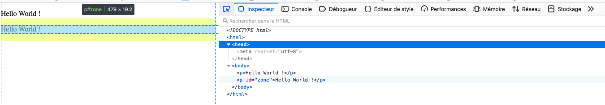
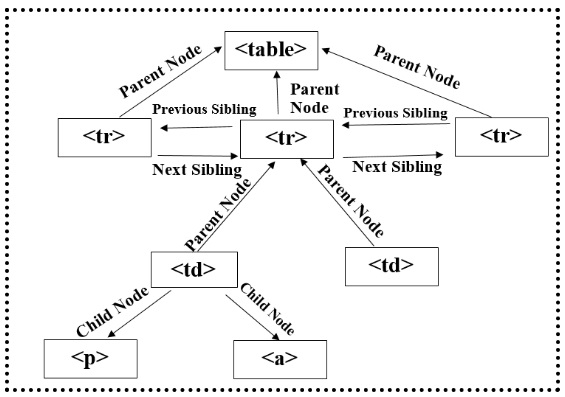
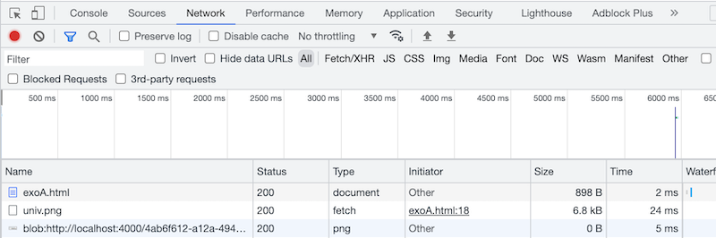
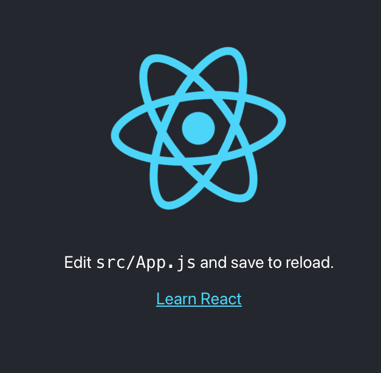
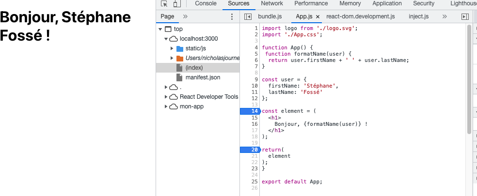
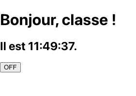
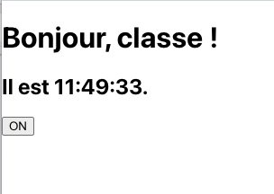

Initiation au JavaScript pour la réalisation de sites
Lors des 4 prochaines séances vous allez vous initier au JS afin de permettre des interactions riches entre
l'utilisateur et le site.
Concrètement après cette séance vous aller apprendre à :
Interagir en JS avec les composants d'un site web
Coder (un peu) en JS (objets, fonctions, collections, ...)
Du code classique : stocker des valeurs, opérations, itérations, retours, fonctions, objets…
<script>
function sum(num1){
var sum=0;
for (var i=1;i<=num1;i++)
sum+=i;
return sum;
}
alert(sum(5));
console.log(sum(6));
</script>
Permettre des interactions utilisateurs et des modifications du HTML
<!-- <script>
function sum(num1){
var sum=0;
for (var i=1;i<=num1;i++)
sum+=i;
return sum;
}
document.getElementById("add").addEventListener('click',function(){
console.log(sum(document.getElementById("limite").value));
});
</script> -->
<body>
<div>
<label>chiffre</label><input id="limite" type="value" name="limite">
<button id="add">Add<button>
</div>
<script>
function sum(num1){
var sum=0;
for (var i=1;i<=num1;i++)
sum+=i;
return sum;
}
document.getElementById("add").addEventListener('click',function(){
console.log(sum(document.getElementById("limite").value));
});
</script>
</body>
Décommentez le bloc en haut et commenter celui du bas. Cela ne marche plus. Pourquoi ?
Bases de la programmation JS
Proche du c et autres c-like (c++, java, ...)
Identifiants : premier caractère doit être un caractère, un _ ou un $ et ne pas être un mot réservé
commentaires : // ou /**/
utilisation du ; en fin d’instruction non obligatoire mais recommandée
utilisation des {} pour définir les blocs d’instructions
types classiques : string, boolean, number (pas de différences),
object, null, undefined
structures de contrôle : for, if, break,
Typage des données non obligatoire :
var message ="hi"; // type mis à string
message = 100; // legal mais non recommandé car le type est changé en "numeric"
var val; // type "undefined"
Gestion des variables globales :
function test (){
var message = "hi"; // variable locale
phrase="ok";
}
test ();
alert(message) // erreur
alert (phrase) // ok
instruction let.
let x = 1;
if (x === 1) {
let x = 2;
console.log(x); // 2
}
console.log(x);//1
for-in / for-of : l'énumération. On utilise normalement for-of sur un contenu itérable (array, map, set, ...)
et le for-in sur les propriétés d'un objet
Des explications supplémentaires pour comprendre la
différence entre les deux.
var person = ["John", "Doe", 25];
for (let x of person) {
console.log(x);
}
//fonctionne, mais ...
for (let x in person) {
console.log(x);
console.log(person[x]);
}
//on l'utilise plutôt dans ce cas là :
let oldCar = {
make: 'Toyota',
model: 'Tercel',
year: '1996'
};
for (let key in oldCar) {
console.log(key + "-->" + oldCar[key]);
//console.log(`${key} --> ${oldCar[key]}`); // autre manière d'écrire
}
for (let propName in window){
console.log(propName);
}
//sur les array il y a every, some, filter, foreach mais dans ce cours,
//à quelques exceptions, on va privilégier for-in for-of (plus dans l'esprit ES6)
Quelques spécificités sur les fonctions :
function sayHi(name , message , age , ville){
alert("Hello " + name + " , " + message + " " + age);
}
sayHi("Nicholas", "how are you?");
function sum(){
return arguments [0]+ arguments [1];
}
function howManyArgs (){
alert(arguments.length);
}
function start(name , message , age , ville){
alert(sum (1 ,2));
alert(sum("hi ","bonjour"));
howManyArgs("string" ,45);
howManyArgs ();
howManyArgs (12);
}
Les fonctions sont des variables/objets :
function callSomeFunction(someFunction , someArgument){
return someFunction(someArgument);
}
function add10(num){
return num +10;
}
var result1=callSomeFunction(add10 ,10);
console.log(result1);
function getGreeting(name){
return "Hello , " + name;
}
var result2 = callSomeFunction(getGreeting , "Bob");
console.log(result2);
Les types primitifs (undefined, null, boolean, number, string) sont atomiques et sont accédés par valeur
Les références : objets composés de plusieurs valeurs auquelles on accède par référence uniquement (au sens
java)
var num1 =5;
var num2=num1; // valeur copiée
var obj1=new Object ();
var obj2= obj1;
obj1.name="Nicholas";
console.log(obj2.name);//"Nicholas"
Le passage d'arguments dans les fonctions est réalisé de la manière
suivante : les types primitifs sont passés par valeur et le reste par
référence.
function setName(obj , age){
obj.name="Nicholas";
age =35;
}
var person=new Object ();
var _age =21;
setName(person , _age),
alert(person.name);// Nicholas
alert(_age);//21
Mais Attention ! Un peu comme en C++ avec le passage par
adresse. Le passage par référence est un abus de langage. C’est en
fait un passage par copie de référence. Si la référence est réaffectée
sur un autre objet, la référence à l’objet d’orgine est perdue.
function setName(obj){
obj.name="Nicholas";
obj = new Object ();
obj.name = "Greg";
}
var person= new Object ();
setName(person);
alert(person.name); // Nicholas
Les collections
Array (collections indexés). Plus d'informations ici.
var colors= new Array ();
var colors= new Array (20);
var colors= new Array("red", "blue", "green");
//ou
var colors = ["red", "blue", "green"];
//tout plein de méthodes très pratiques
colors.push("red", "green");// ajoute à la fin
colors.pop(); // enlève et retourne le dernier élément
colors.unshift("red","green");// ajoute deux éléments au début du tableau
colors.shift ();// enlève et retourne le premier élément
var values = [3,1,2,5,4];
values.sort (); // trie le tableau par ordre croissant
values.reverse ();// inverse le tableau
//utilisation de forEach pour appeler des fonctions sur chaque item
const array1 = ['a', 'b', 'c'];
array1.forEach(element => console.log(element)); //version E6
var fruits = ["apple", "orange", "cherry"];
fruits.forEach(myFunction);
function myFunction(item, index) {
console.log(index + ":" + item );
}
//on préfèrera (plus "léger")
var couleurs = ['rouge', 'vert', 'bleu'];
couleurs.forEach(function(couleur) {
console.log(couleur);
});
Collections avec clé (valeurs ou objet ): Maps, Sets.
Plus d'informations ici.
//map : on associe une cléf et une valeur
var sayings = new Map();
sayings.set("dog", "woof");
sayings.set("cat", "meow");
sayings.set("elephant", "toot");
sayings.size; // 3
sayings.get("fox"); // undefined
sayings.has("bird"); // false
sayings.delete("dog");
for (var [key, value] of sayings) {
console.log(key + " goes " + value);
//Set : comme Array mais on garantit qu'une valeur d'un élément Set ne peut y apparaître qu'une seule fois, il est unique pour cette instance de Set
var monEnsemble = new Set();
monEnsemble.add(1);
monEnsemble.add("du texte");
monEnsemble.add("du texte");
monEnsemble.size; // 2
for (let item of monEnsemble) console.log(item);
monEnsemble.add("toto");
for (let item of monEnsemble) console.log(item);
monEnsemble.has(1); // true
monEnsemble.delete("toto");
monEnsemble.size; // 2
for (let item of monEnsemble) console.log(item);
Les fonctions anonymes
En JS, les fonctions anonymes sont très utilisées. Nous en avons déjà vu, c'est une fonction qui n'a pas de nom.
let maFonction = function() {
/* instructions */
}
//appel de la fonction anonyme :
maFonction();
Il est possible d'auto invoquer une fonction anonyme. Cela permet d'exécuter cette fonction lors de sa création
et que les variables et ne soient pas disponibles dans le reste du code.
(function maFonction(){/*instructions*/})();
Dans le cadre de ce cours nous allons principalement utiliser des fonctions anonymes pour déclencher du code lorsqu'un évènement se produit (interaction avec un utilisateur, réponse d'un serveur, ...).
monBouton.addEventListener('click',function(){/*CODE DE LA FONCTION ANONYME*/});
Les fonctions fléchées
Les fonctions fléchées : une syntaxe plus courte. Lisez la documentation
de mozilla pour en apprendre plus (notamment les subtilités avec this).
Les fonctions fléchées sont souvent anonymes et ne sont pas destinées à être utilisées pour déclarer des méthodes.
// ES5
const add = function(x, y) {
return x + y
}
console.log(add(5, 4)) // 9
// ES6
const addES6 = (x, y) => { return x + y }
console.log(addES6(5, 6)) // 11
const addES6Bis = (x, y) => x + y
console.log(addES6Bis(5, 6)) // 11
const prices = [4, 5, 14, 20, 45, 3, 8, 15]
var greaterThan10 = prices.filter(function(p) {
return p > 10
})
console.log(greaterThan10) // [14, 20, 45, 15]
const greaterThan10ES6 = prices.filter(p => p >= 10)
console.log(greaterThan10ES6) // [14, 20, 45, 15]
Encore quelques exemples d'un même code dans différentes versions :
function disBonjour(){
alert('Bonjour');
}
let disBonjour= function(){
alert('Bonjour');
};
disBonjour();
let disBonjourV2= function bonjour(nom){
if (nom){
alert('Bonjour ' + nom);
}else{
alert('inconnu');
}
};
disBonjourV2();
disBonjourV2("IUT");
const disBonjourV3 = (nom) => {
if (nom){
alert('Bonjour ' + nom);
}else{
alert('inconnu');
}
}
disBonjourV3();
disBonjourV3("IUT");
const disBonjourV3 = (nom) => nom;
disBonjourV3("nicholas");
const disBonjourV3 = (nom) =>
{
if (nom){return 'Bonjour'+nom;}
else{return 'inconnu';}
};
alert(disBonjourV3("nicholas"));
Les fonctions fléchées et le mot clef this.
Vous avez l'habitude avec Java, que this référence l'instance d'un objet. En JS c'est aussi le cas. Ainsi,
lorsqu'un nouvel objet est instancié chaque nouvelle fonction/méthode nommée définit son propre this.
let pierre = {name: 'Pierre'};
let mathilde = {name: 'Mathilde'};
function disBonjour(){
alert('Bonjour ' + this.name);
}
pierre.bonjour = disBonjour;
mathilde.bonjour = disBonjour;
pierre.bonjour();
mathilde.bonjour();
Dans les fonctions fléchées c'est un peu différent. Le this ne fait pas référence à une instance. Dans
l'esprit, les fonctions fléchées sont à utiliser comme des méthodes anonymes.
Nous utiliserons toujours les fonctions fléchées de manière anonyme. Elles n'utiliseront pas de constructeur.
on voit dans l'exemple ci-dessous qu'une fonction fléchée n'a pas son propre this. Ici il fait référence à
l'objet windows.
La méthode filter() crée et retourne un nouveau tableau contenant tous les éléments du tableau d'origine qui remplissent une condition déterminée par la fonction callback (dans notre cas elle sera généralement anonyme).
const words = ['spray', 'limit', 'elite', 'exuberant', 'destruction', 'present'];
const result = words.filter(word => word.length > 6);
// Array ["exuberant", "destruction", "present"]
//extrait un tableau contenant les personnes n'ayant pas leur prénom commençant par une majuscule
const persons = [
{nom : "Lamoureux", prenom: "Marty"},
{nom : "Fosse", prenom: "stéphane"},
{nom : "Journet", prenom: "nicholas"}
];
persons.filter( item => item.prenom[0] >= 'a' && item.prenom[0] <= 'z' );
La méthode find
La méthode find() renvoie la valeur du premier élément trouvé dans le tableau qui respecte la condition donnée par la fonction de test passée en argument. Sinon, la valeur undefined est renvoyée.
La méthode reduce() applique une fonction qui est un « accumulateur » et qui traite chaque valeur d'une liste (de la gauche vers la droite) afin de la réduire à une seule valeur.
Une (première) manière très "java" de faire de l'objet.
* Titulaires de comptes
*/
class Titulaire{
/**
* Titulaires de comptes bancaires
* @param {string} nom Nom du titulaire
* @param {string} prenom Prénom du titulaire
*/
constructor(nom, prenom){
this.nom = nom;
this.prenom = prenom;
}
/**
* Afficher l'identité du titulaire
*/
identite(){
console.log(`Le titulaire s'appelle ${this.prenom} ${this.nom}`);
}
}
/**
* Compte bancaire
*/
class Compte{
/**
* Création du compte
* @param {Titulaire} titulaire Titulaire du compte
* @param {number} montant Montant de départ
*/
constructor(titulaire, montant = 0){
this.titulaire = titulaire;
this.solde = montant;
}
/**
* Créditer le compte
* @param {number} montant
*/
crediter(montant){
this.solde += montant;
}
/**
* Débiter le compte
* @param {number} montant
*/
debiter(montant){
this.solde -= montant;
}
}
/**
* Compte épargne
*/
class CompteEpargne extends Compte{
/**
* Création du compte
* @param {Titulaire} titulaire Titulaire du compte
* @param {number} montant Montant de départ
* @param {number} taux Taux d'intérêts
* @param {number} rythme Rythme de versement des intérêts (en millisecondes)
*/
constructor(titulaire, montant = 50, taux = 0.005, rythme = 1000){
// Nous transférons les informations utiles à l'objet Compte
super(titulaire, montant);
// Nous créons les propriétés spécifiques à un compte épargne
this.taux = taux;
this.rythme = rythme;
}
}
let titulaire3 = new Titulaire("Penneflamme", "Katy");
let compte1 = new Compte(titulaire3, 25);
// Nous créditons le compte de 150 euros
compte1.crediter(150);
// Nous débitons le compte de 20 euros
compte1.debiter(20);
let compteEpargne = new CompteEpargne(titulaire3, 15, 0.005, 5000);
Une variante :
function Personne(prenom, nom, age, genre, interets) {
this.nom = {
prenom,
nom
};
this.age = age;
this.genre = genre;
this.interets = interets;
this.bio = function() {
alert(this.nom.prenom + ' ' + this.nom.nom + ' a ' + this.age + ' ans. Il aime ' + this.interets[0] + ' et ' + this.interets[1] + '.');
};
this.salutation = function() {
alert('Bonjour ! Je m\'appelle ' + this.nom.prenom + '.');
};
};
var personne1 = new Personne('Bob', 'Smith', 32, 'homme', ['musique', 'ski']);
//pour instancier à partir d'une instance existante.
var personne2 = Object.create(personne1);
d'autres variantes :
var maVoiture = new Object();
maVoiture.fabricant = "Ford";
maVoiture.modèle = "Mustang";
maVoiture.année = 1969;
var maHonda = {couleur: "rouge", roue: 4, moteur: {cylindres: 4, taille: 2.2}};
var Animal = {
type: "Invertébrés", // Valeur par défaut value of properties
afficherType : function() { // Une méthode pour afficher le type Animal
console.log(this.type);
}
}
// On crée un nouveau type d'animal, animal1
var animal1 = Object.create(Animal);
animal1.afficherType(); // affichera Invertébrés
// On crée un type d'animal "Poissons"
var poisson = Object.create(Animal);
poisson.type = "Poisson";
poisson.afficherType(); // affichera Poissons
Exercice 1 : fonctions, parcours de collections; ...
Complétez le code JS permettant de
Modéliser une personne (nom, date d’anniversaire, liste d’amis)
Ajouter des amis à une personne
Afficher le nombre d'amis et la liste de mes amis (utilisez un forEach ou un for-of)
Afficher "je suis le plus vieux de ma bande d’amis" si c’est effectivement le cas, "je ne suis pas le plus
vieux" sinon.
function Person(name, date){
this.name=name;
this.birthDay= new /*compléter*/;
this.friends=new /*compléter*/;
this.addfriends=function(friend){
/*compléter*/
};
this.sayNameFriends=function(){
/*compléter*/
};
this.olderthanFriends=function(){
/*compléter*/
};
};
function start(){
var P1= new Person("Nicho", new Date(1949,11,10));
var P2= new Person("Fred", new Date(1979,09,27));
var P3= new Person("Seb", new Date(1980,11,20));
var P4= new Person("Ed", new Date(1979,02,04));
P1.addfriends(P2);
P1.addfriends(P3);
P1.addfriends(P4);
P1.sayNameFriends();
P1.sayNameFriendsMarcheAussi();
//if (P1.olderthanFirends(P1.birthDay))
if (P1.olderthanFriends())
console.log("je suis le plus vieux de la bande");
else
console.log("je ne suis pas le plus vieux de la bande");
}
JS et le DOM
Les concepts les plus importants
Comprendre le DOM et sa hiérarchie de nœuds

Les noeuds sont typés
Chaque noeud a une propriété nodeType parmi 12 possibles : ELEMENT_NODE, TEXT_NODE, ATTRIBUTE_NODE, COMMENT_NODE,
...
var node=document.getElementById("element").firstChild;
alert(node);//affiche [object HTMLParagraphElement]
var node=document.getElementById("monImage");
alert(node);//affiche [object HTMLImageElement]
var node=document.getElementById("element").firstChild;
alert(node);//affiche [object Text]
var node=document.getElementById("monImage").attributes[0];
alert(node);//affiche [object Attr]
La relation entre les nœuds

<div id="papa"> <p id="premierFils">Premier paragraphe </p> <p id="secondFils">Second paragraphe </p> <p id="dernierFils">Dernier Paragraphe </p> </div>
<div id="papaBis">
<p id="premierFilsBis">Premier paragraphe </p>
<p id="secondFilsBis">Second paragraphe </p>
<p id="dernierFilsBis">Dernier Paragraphe </p>
</div>
<script>
function start(){
var pere=document.getElementById("papa");
var fils1=document.getElementById("premierFils");
var fils2=document.getElementById("secondFils");
var fils3=document.getElementById("dernierFils");
alert(pere.firstChild.firstChild.nodeValue);
alert(pere.lastChild.firstChild.nodeValue);
alert(pere.childNodes[1].firstChild.nodeValue);
alert(fils1.parentNode);
alert(fils1.nextSibling.firstChild.nodeValue);
alert(fils3.previousSibling.firstChild.nodeValue);
var pereBis=document.getElementById("papaBis");
var fils1Bis=document.getElementById("premierFilsBis");
var fils2Bis=document.getElementById("secondFilsBis");
var fils3Bis=document.getElementById("dernierFilsBis");
alert(pereBis.firstChild.firstChild.nodeValue);
alert(pereBis.lastChild.firstChild.nodeValue);
alert(pereBis.childNodes[1].firstChild.nodeValue);
alert(fils1Bis.parentNode);
alert(fils1Bis.nextSibling.firstChild.nodeValue);
alert(fils3Bis.previousSibling.firstChild.nodeValue);
}
</script>
Les méthodes de manipulation du DOM à connaître
Ajout d’un noeud (déplacement si le nœud existe déjà)
node.novalue;
node.setAttribute("attributName", "new Value");
var node = document.getElementById("p1");
//le texte est un fils de node
node.firstChild.nodeValue="mon super texte";
<p id="p1"> </p>
var node = document.getElementById("img1");
node.setAttribute("src","http://urlz.fr/TnT");
alert(node.src);
<p> <img id="img1" alt="l'atelier du peintre"/> </p>
Créer un noeud du DOM
var node=document.createElement("div");
var node=document.createTextNode("Hello world");
var node = document.createElement("img");
node.setAttribute("src","http://urlz.fr/TnT");
node.title="l'atelier du peintre";
var p1 = document.getElementById("p1");
p1.appendChild(node);
<p id="p1"> </p>
var node = document.createTextNode("Hellow World");
var p1 = document.getElementById("p1") ;
p1.appendChild(node);
<p id="p1"> </p>
Interactions en JS : HTML/DOM event
La gestion des événements en JS est très bien documentée. Je vous encourage à aller lire les sources suivantes :
lien 2 Pour la liste des événements
accessibles en JS
Dans le cadre de ce cours nous allons survoler cette partie. En JS nous utiliserons généralement la syntaxe
suivante :
element.addEventListener(event, listener);
var formulaire = document.getElementById("coordonnees");
formulaire.addEventListener("submit", envoiForm, false);
document.getElementById("clickIt").addEventListener("click", RespondClick);
document.getElementById("MouseOnIT").addEventListener("mouseover", RespondMouseOver);
document.getElementById("add").addEventListener('click',function(){
console.log(sum(document.getElementById("limite").value));
});
// Fonction pour modifier le contenu de t2
function modifyText(new_text) {
var t2 = document.getElementById("t2");
t2.firstChild.nodeValue = new_text;
}
// Ajout d'un écouteur d'évènement au tableau avec une fonction flèche
var el = document.getElementById("outside");
el.addEventListener("click", () => { modifyText("four"); }, false);
Référence à this
Comme défini par Mozilla
: "Il est souvent souhaitable de référencer l'élément sur lequel le gestionnaire d’événements a été lancé. Si le
gestionnaire est attaché à une fonction à l'aide de addEventListener(), la valeur de this dans le gestionnaire est
une référence à l'élément".
var Something = function(element) {
// |this| est un nouvel objet créé
this.name = 'Something Good';
this.onclick1 = function(event) {
console.log(this.name); // undefined (indéfini), car |this| est l'élément
this.style.color='red'; //OK
};
this.onclick2 = function(event) {
console.log(this.name); // 'Something Good', car |this| est lié à un nouvel objet créé
};
element.addEventListener('click', this.onclick1, false);
element.addEventListener('click', this.onclick2.bind(this), false); // Trick
}
var s = new Something(document.getElementById("paragraphe"));//on récupère un p
Exercice 2
Regardez la vidéo ci-dessous et complétez le code permettant de réaliser les modifications observées.
la page contient deux liens
quand on clique sur le premier lien son fond passe en bleu si on clique de nouveau dessus il passe en rouge.
il repasse en bleu si on clique de nouveau dessus...
quand on clique sur le second lien, le texte disparait et à la place s'affiche le mot "coucou" avec une couleur
de texte orange.
Exercice 3
Regardez la vidéo ci-dessous et complétez le code permettant de réaliser les modifications observées.
Deux champs input permettent de saisir deux entiers.
Une liste permet de choisir entre l'opérateur '+' ou '-'
Quand on choisit une opérande le résultat de l'opération d'affiche en dessous.
Regardez la vidéo ci-dessous et écrivez le code permettant de réaliser les modifications observées.
la page est consitutée uniquement de balises h1 et de paragraphes.
Le code javascript doit créer automatiquement un sommaire à partir des balises h1 issues du code HTML.
ce sommaire doit être cliquable et permettre de déplacer la page à la section désirée
Exercice 5
Regardez la vidéo ci-dessous et complétez le code permettant de réaliser les fonctionnalités observées.
La page est composée de deux champs input de type texte permettant de saisir le prénom et le nom d'un
personne.
Il y a également un bouton "add" qui lorsque l'on clique dessus ajoute un li dans un ul (déjà existant)
avec le nom et le prénom de la personne
Une liste déroulante contient tous les prénoms/noms déjà ajoutés. Quand on sélectionne un item de cette
liste et qu'on appuie sur le bouton "delete", le nom est supprimé de cette liste déroulant, et le li
correspondant est également supprimé
Vous utiliserez OBLIGATOIREMENT une map (documentation).
La
clé sera le nom de la personne.
Regardez la vidéo ci-dessous et complétez le code permettant de réaliser les fonctionnalités observées.
La page contient une zone avec un texte à l'intérieur. en dessous il y a un lien "french" et un lien "english".
Lorsque la souris est positionnée sur l'un des liens le code doit :
Supprimer le nœud contenant le texte
Créer un nœud de type image et y insérer l'image du drapeau qui correspond
Lorsque la souris n'est plus positionnée sur l'un des liens le code doit :
Supprimer le nœud contenant l'image
Supprimer le noeud contenant le texte
Créer un noeud de type image et y insérer l'image adéquate
Requête AJAX et données structurées
Préambule
Comme défini dans la documentation officielle de mozilla : "La programmation asynchrone est une technique qui
permet à un programme de démarrer une tâche à l'exécution potentiellement longue et, au lieu d'avoir à attendre
la fin de la tâche, de pouvoir continuer à réagir aux autres évènements pendant l'exécution de cette tâche. Une
fois la tâche terminée, le programme en reçoit le résultat. De nombreuses fonctions fournies par les
navigateurs, dont les plus intéressantes, peuvent prendre un certain temps et sont donc asynchrone.". Dans le
cadre de ce cours nous allons étudier l'API de fetch(). Avec fetch() nous allons pouvoir
envoyer une requête qui pourra nous répondre sous différents formats.
Chargement asynchrone d'une image
Tout d'abord nous allons étudier un exemple de requête asynchrone permettant de charger une image. On imagine
que cette requète peut prendre du temps. L'image peut être énorme ou le serveur peut simplement mettre du temps
à répondre. Après avoir lancé un serveur local avaec la commande php -S localhost:4000 étudiez le code
ci-dessous :
const monImage = document.querySelector('img');
// construction d'un obet requete
// Ici on passe simplement le nom de l'image que l'on veut récupérer sur le serveur
//on verra plus tard qu'il est possible de passer des paramètres
let maRequete = new Request('univ.png');
//la requête part au serveur
fetch(maRequete)
//.then est exécuté quand la requète est revenue. Cette requète est aynschrone.
//donc pendant le temps d'attente le site reste utilisable (l'appel n'est pas bloquant)
.then(function (reponse) {
//on vérifie que le serveur à retourné un code 200
if (!reponse.ok) {
throw new Error(`erreur HTTP! statut: ${reponse.status}`);
}
//fetch retourne ce qu'on appelle une promesse
//c'est un objet qui indique que tout c'est bien passé (ou pas).
//ici la promesse contient la réponse (ici un blob c'est à dire un fichier binaire : l'image)
return reponse.blob();
})
//grace à cette promesse retournée on est certain que l'image est bien téléchargée,
//avec le then on peut ensuite chainer la suite des traitements.
//Sans cet appel asynchrone,
//on pourrait en venir à la situation ou l'image serait ajoutée via le code JS alors
// qu'elle n'est pas encore physiquement sur votre ordinateur
.then(function (reponse) {
//insertion de l'image
let URLobjet = URL.createObjectURL(reponse);
monImage.src = URLobjet;
});
Sur l'image ci-dessous, on observe que l'image a été téléchargée en 24 ms.

Chargement asynchrone d'un fichier JSON
Dans l'exemple ci-après on charge de manière asynchrone un fichier JSON dont on souhaite afficher le contenu.
Le principe est le même que pour l'image sauf que l'on sait qu'il faut parser des données de type texte au
format JSON
Le code source permettant d'afficher toutes les données :
const myList = document.querySelector('ul');
const myRequest = new Request('data/foot.json');
fetch(myRequest)
// Ici la nouveauté c'est qu'il faut retourner une promesse (via une fonction flechée)
//contenant les données au format JSON
//Je vous encourage à mettre des points d'arrêt dans le debugger de votre navigateur
//pour observer le contenu des différents objets
.then((response) => response.json())
.then((data) => {
//JSON est un format qui permet de boucler sur le contenu (un Array)
for (const v of data) {
const listItem = document.createElement('li');
listItem.appendChild(
document.createElement('strong')
).textContent = v.vainqueur;
//il faut avoir lu l'API pour savoir comment se nomment les attributs (ici "vainqueur" et "année")
listItem.append(` a gagné la coupe du monde en ${v.annee}`);
myList.appendChild(listItem);
}
})
.catch(console.error);
Paramétrer une requète
Dans certains cas, il faudra envoyer des paramètres à un serveur. On veut, dans l'exemple ci-dessous, envoyer une
année de coupe du monde et avoir en réponse le vainqueur
Il est possible d'échanger avec le serveur de deux manières différentes
GET : les paramètres sont passés dans l'URL : monScript.php?nom=Nicholas
POST : les paramètres sont écrits dans le corps de la requête HTTP
En mode GET
le code php
$answers = ["1930"=>"Uruguay","1934"=>"Italie","1938"=>"Italie","1950"=>"Uruguay","1954"=>"Allemagne"];
$annee=$_GET["annee"];
$data = array();
if ($answers[$annee] != null){
echo json_encode( $answers[$annee] );
}
else{
echo json_encode( "Année sans coupe du monde" );
}
votre client vend des planches de surf, il veut pouvoir consulter la quantité de
planches qu'il a vendues (3 catégories de planches : Nice, Biarritz ou Lacanau) et son bénéfice total engrangé
et tout ceci depuis un site web.
Vous lui proposez de créer un site :
Contenant un tableau de 3 lignes pour les 3 planches
Pour chaque ligne on affiche : la quantité vendue de ce modèle, le prix de vente et le prix d'achat
En dessous du tableau s'affiche le bénéfice net
Une liste déroulante contenant 4 choix : Nice, Biarritz, Lacanau ou toutes, permet à l'utilisateur
d'indiquer s'il veut mettre à jour les chiffres de "quantité vendue" d'un modèle précis ou de tous les modèles
d'un coup
Un bouton permet à l'utilisateur de demander une mise à jour des chiffres
La vidéo ci-dessous illsutre le résultat attendu
Techniquement vous décidez que :
Les données fixes (prix de vente et d'achat) seront stockées dans un fichier JSON qui sera chargé de manière
asynchrone au moment du chargement du site
Les données dynamiques seront affichées après l'envoi d'une requète au serveur qui vous retourne
l'information désirée
Regardez le script php ci-dessous et comprennez son fonctionnement. Un simple copier/coller de ce code permet d'avoir un script capable de fournir les données.
Télécharger l'archive suivante . Elle contient le html et css correspondant à la vidéo. Il vous reste à coder la partie JS.
Les promesses
Nous avons vu rapidement la notion de promesse via le return effectué dans le fetch.
Rentrons un peu plus dans le fonctionnement des promesses.
Une promesse est une fonction à laquelle on passera deux arguments : resolve et reject. Cette fonction est
exécutée immédiatement par l'implémentation de Promise qui fournit les fonctions resolve et reject (elle est
exécutée avant que le constructeur Promise ait renvoyé l'objet créé). Les fonctions resolve et reject,
lorsqu'elles sont appelées, permettent respectivement de tenir ou de rompre la promesse. On attend de
l'exécuteur
qu'il démarre un travail asynchrone puis, une fois le travail terminé, appelle la fonction resolve (si tout
s'est
bien passé) ou la fonction reject (lorsqu'il y a eu un problème) pour définir l'état final de la promesse.
Si une erreur est générée par l'exécuteur, la promesse est rompue et la valeur de retour de l'exécuteur est
ignorée. (définition mozilla). Le schéma ci-dessous détaille les différents états d'une promesse.
const maPremierePromesse = new Promise((resolve, reject) => {
// réaliser une tâche asynchrone et appeler :
// resolve(uneValeur); // si la promesse est tenue
// ou
// reject("raison d'echec"); // si elle est rompue
});
//L'objet promise contient deux méthodes :
//.then(f) appelée quand le résultat est disponible
//.catch(f) appelée en cas d'erreur
Exemple d'une promesse.
const promise1 = new Promise(function(resolve, reject) {
//L'asynchronisme est simulé par le timeout aléatoire.
setTimeout(function() {
resolve('foo');
}, Math.random() * 2000 + 1000);
});
//Quand la promesse est tenue c'est ce code (ce qui suit then) qui sera exécuté. resolve est "lié" à then.
promise1.then(function(value) {
console.log(value);
// expected output: "foo"
});
//exécution de la promesse
console.log(promise1);
// expected output: [object Promise] foo
Autre exemple d'une promesse.
function methode1(){
return new Promise((resolve, reject) => {
//peut être un chargement d'une grosse image, d'un script, une requette XHR
console.log("Methode 1 fait un truc asynchrone");
// réussir une fois sur deux
if (Math.random() > .5) {
resolve("Tout va bien dans la méthode asynchrone 1");
} else {
reject(Error('Problème méthode 1'));
}
})
}
function methode2(reponse){
console.log(reponse);
return new Promise((resolve) => {
//peut être un chargement d'une grosse image, d'un script, une requette XHR
console.log("Methode 2 fait un truc asynchrone");
// 100% de réussite
resolve("Tout va bien dans la méthode asynchrone 2");
})
}
methode1()
.then((reponse) => methode2(reponse))
.then((reponse)=> console.log(reponse,"!"))
.catch((alert)=>console.log(alert))
.then(() => console.log ("tout est terminé"));
Depuis ECMAScript 2017, les opérateurs async/await permettent de simplifier l'écriture des promesses. async
renvoie systématiquement une promesse. Si une erreur est levée pendant l’exécution de la fonction, la promesse
est
rejetée, et si une valeur est retournée, la promesse est résolue avec cette valeur.
async function faireQqc(){
return 'resultat';
}
//équivaut à return Promise.resolve('résultat');
async function toto() {
try {
//await attend le résultat d'une promesse
const result = await faireQqc();
const newResult = await faireQqcAutre(result);
const finalResult = await faireUnTroisiemeTruc(newResult);
console.log('Résultat final : ' + finalResult);
} catch(error) {
//la gestion des erreurs est un peu simplifiée
failureCallback(error);
}
}
Exercice 8
Écrivez le code source permettant de vérifier si un login est disponible ou pas.
La page est composée d'un champ input de type texte.
Lorsque l'utilisateur appuie sur la touche TAB une promesse est en charge de lancer une requête ajax afin que le
serveur vérifie si le login est disponible.
En fonction de la réponse le texte adéquat apparaît. Il faut gérer cela avec une promesse.
Voici le script PHP. Il est très basique. Il repond 0 si le nom est connu, 1 sinon.
if (strcmp("nJournet", $_GET["nom"])===0 or strcmp("sFosse", $_GET["nom"])===0)
echo 0;
else
echo 1;
Exercice 9
Récupérez, l'archive suivante. Elle contient la base du code source
(html/css) permettant de réaliser un site web qui affiche une citation de JCVD quand on clique sur le picto. Quand il n'y a plus de citation un message s'affiche. Regardez la vidéo et écrivez le javaScript permettant de reproduise le
même
comportement.
Débuter en react
Nous avons 8H00 pour voir les bases du React. Ce cours est librement inspiré de la documentation fournie par le site officiel de reactJS.
Création d'un projet REACT
Commencez par créer un projet React et exécutez-le en mode développement.
npx create-react-app mon-app
cd mon-app
npm start

Vous remarquerez qu'un grand nombre de répertoires et fichiers ont été créés. Create React App ne prend pas en charge la logique côté serveur ni les bases de données ; il crée simplement une chaîne de construction pour la partie frontale, de sorte que vous pouvez utiliser le serveur de votre choix. Sous le capot, il utilise Babel et webpack, mais vous n’avez pas besoin de connaître ces outils. Lorsque vous êtes prêt à déployer en production, exécutez npm run build pour créer une version optimisée de votre application dans le répertoire build.
Prenons le temps de comprendre l'architecture qui vient d'être créée :
node_modules contient les (nombreux) paquets node qui ont été téléchargés lors de la création du projet. Lors de l'écriture de votre code JS vous pourrez les importer pour profiter de leurs méthodes : gérer du JSON, faire des requètes asyncrhomes, ...
Le répertoire public contient (entre autre) le fichier index.html. Dans ce fichier, observez la ligne <div id="root"></div> c'est ici, lors du rendu de la page, que sera injecté le code permettant d'afficher du contenu.
dans src plusieurs fichiers sont très importants :
index.js va indiquer comment construire votre page en y intégrant vos (futurs) composants. Le code exemple demande l'injection du composant App<React.StrictMode>
<App />
</React.StrictMode>
Regardez le contenu de App.js. Il contient le code qui sera injecté dans votre fichier index.html. Observez que ce code est compilé. On n'écrit pas du html comme vous en avez l'habitude. Le css qui est appliqué est celui défini dans App.css
Introduction à JSX
JSX, est une extension syntaxique de JavaScript. Les créateurs de React conseillent de l’utiliser React afin de décrire à quoi devrait ressembler l’interface utilisateur (UI). JSX produit des « éléments » React. Dans la suite de ce document, nous verrons les bases de JSX dont vous aurez besoin pour bien démarrer.
const element = <h1>Bonjour, monde !</h1>;
Supprimez le contenu de App.js et insérer ce contenu
function formatName(user) {
return user.firstName + ' ' + user.lastName;
}
const user = {
firstName: 'Stéphane',
lastName: 'Fossé'
};
const element = (
<h1>
Bonjour, {formatName(user)} !
</h1>
);
return(
element
);
La page suivante s'affiche. Notez que vous pouvez débugger votre code, comme vous en aviez l'habitude
avec du JS classique.

Composants et Props
Définition
Les composants vous permettent de découper l'interface utilisateur en éléments indépendants et réutilisables, vous permettant ainsi de considérer chaque élément de manière isolée.
Cette page fournit une introduction au concept de composants. Vous trouverez une référence détaillée de l’API des composants ici.
Conceptuellement, les composants sont comme des fonctions JavaScript. Ils acceptent des entrées quelconques (appelées « props ») et renvoient des éléments React décrivant ce qui doit apparaître à l’écran.
function Welcome(props) {
return <h1>Bonjour, {props.name}</h1>;
}
Mais ces éléments peuvent également représenter des composants définis par l’utilisateur :
const element = <Welcome name="Sara" />;
Lorsque React rencontre un élément représentant un composant défini par l’utilisateur, il transmet les attributs JSX à ce composant sous la forme d’un objet unique props.
Par exemple, ce code affiche « Bonjour, Sara » sur la page :
return(
element
);
Récapitulons ce qui se passe dans cet exemple :
On appelle ReactDOM.render() avec l’élément .
React appelle le composant Welcome avec comme props {name: 'Sara'}
Notre composant `Welcome` retourne un élément `<h1>Bonjour, Sara</h1> pour résultat
React DOM met à jour efficacement le DOM pour correspondre à <h1>Bonjour, Sara</h1>
Composition de composants
Il est évidemment possible de combiner les composants.
Partons du code suivant. Nous allons le découper pour en extraire des composants.
Le composant Avatar n’a pas besoin de savoir qu’il figure dans un composant Comment. C’est pourquoi nous avons donné à sa prop un nom plus générique : user plutôt que author.
Les props sont en lecture seule. Un composant ne doit JAMAIS modifier ses props. La fonction suivante est interdite
function sub(account, amount) {
account.total -= amount;
}
Utiliser des classes et les états
Tout composant fonctionnel peut être converti en classe
Partons d'un composant permettant d'afficher une horloge qui se met à jour toute seule. Ce code a un problème : le fait que la Clock mette en place le minuteur et mette à jour son interface utilisateur devrait être un détail d’implémentation de la Clock.
function Clock(props) {
return (
<div>
<h1>Bonjour, monde !</h1>
<h2>Il est {props.date.toLocaleTimeString()}.</h2>
</div>
);
}
function tick() {
ReactDOM.render(
<Clock date={new Date()} />,
document.getElementById('root')
);
}
setInterval(tick, 1000);
Idéalement, on veut écrire ceci une seule fois et voir la Clock se mettre à jour elle-même :
ReactDOM.render(
<Clock />,
document.getElementById('root')
);
Vous pouvez convertir un composant fonctionnel comme Clock en une classe en cinq étapes :
Créez une classe ES6, avec le même nom, qui étend React.Component.
Ajoutez-y une méthode vide appelée render().
Déplacez le corps de la fonction dans la méthode render().
Remplacez props par this.props dans le corps de la méthode render().
Supprimez la déclaration désormais vide de la fonction.
Ne recopiez pas ce code (nous allons coder une version améliorée juste après), testez le directement ici
Le state ou l’état en français va être pour un composant donné un objet accessible uniquement depuis ce composant, où l’on va pouvoir stocker les données que nous voudrons utiliser à travers notre composant. Le point clef à comprendre est que la méthode setState permet de mettre à jour un state. Cette mise à jour va invoquer la méthode render() du composant.
import React from 'react';
class Clock extends React.Component {
//ajout d'un constructeur qui initialise le state
constructor(props) {
super(props);
this.state = {date: new Date()};
}
// Dans des applications avec de nombreux composants, il est très important de libérer les ressources utilisées par les composants quand ils sont détruits.
// Nous voulons mettre en place un minuteur quand une Horloge apparaît dans le DOM pour la première fois. Le terme React « montage » désigne cette phase.
// Nous voulons également nettoyer le minuteur quand le DOM produit par l’Horloge est supprimé. En React, on parle de « démontage ».
componentDidMount() { this.timerID = setInterval(() => this.tick(),1000);}
componentWillUnmount() { clearInterval(this.timerID);}
tick() {
//setState va invoquer render()
this.setState({
date: new Date()
});
}
render() {
return (
<div>
<h1>Bonjour, classe !</h1>
//on a remplacé this.props.date par this.state.date dans la méthode render()
<h2>Il est {this.state.date.toLocaleTimeString()}.</h2>
</div>
);
}
}
export default Clock;
On récapitule les étapes :
Quand Clock est passé à root.render() (dans index.js ), React appelle le constructeur du composant Clock. Puisque Clock a besoin d’afficher l’heure actuelle, il initialise this.state avec un objet contenant l’heure actuelle. Nous mettrons cet état à jour par la suite.
React appelle ensuite la méthode render() du composant Clock. C’est comme cela que React découvre ce qu’il faut afficher à l’écran. React met ensuite à jour le DOM pour correspondre à la sortie de la méthode render() du composant Clock.
Quand la sortie de la Clock est insérée dans le DOM, React appelle la méthode de cycle de vie componentDidMount(). À l’intérieur, le composant Clock demande au navigateur de mettre en place un minuteur pour appeler la méthode tick() du composant une fois par seconde.
Chaque seconde, le navigateur appelle la méthode tick(). À l’intérieur, le composant Clock planifie une mise à jour de l’interface utilisateur en appelant setState() avec un objet contenant l’heure actuelle. Grâce à l’appel à setState(), React sait que l’état a changé, et invoque à nouveau la méthode render() pour savoir ce qui devrait être affiché à l’écran. Cette fois, la valeur de this.state.date dans la méthode render() est différente, la sortie devrait donc inclure l’heure mise à jour. React met à jour le DOM en accord avec cela.
Si le composant Clock finit par être retiré du DOM, React appellera la méthode de cycle de vie componentWillUnmount() pour que le minuteur soit arrêté.
Gérer les évènements
La gestion des événements pour les éléments React est très similaire à celle des éléments du DOM. Il y a tout de même quelques différences de syntaxe :
Les événements de React sont nommés en camelCase plutôt qu’en minuscules.
En JSX on passe une fonction comme gestionnaire d’événements plutôt qu’une chaîne de caractères.
<button onClick={activateLasers}>
Activer les lasers </button>
Autre différence importante : en React, on ne peut pas renvoyer false pour empêcher le comportement par défaut. Vous devez appeler explicitement `preventDefault`
function ActionLink() {
function handleClick(e) {
e.preventDefault();
console.log('Le lien a été cliqué.');
}
return (
<a href="#" onClick={handleClick}>Clique ici </a>
);
}
Dans l'exemple ci-dessous, permet de gérer un bouton qui change de texte quand on appuie dessus.


class Toggle extends React.Component {
constructor(props) {
super(props);
this.state = {isToggleOn: true};
// Cette liaison est nécéssaire afin de permettre
// l'utilisation de `this` dans la fonction de rappel. ---> TRES IMLPORTANT
this.handleClick = this.handleClick.bind(this);
}
handleClick() {
this.setState(state => ({
isToggleOn: !state.isToggleOn
}));
}
render() {
return (
<button onClick={this.handleClick}>
{this.state.isToggleOn ? 'ON' : 'OFF'}
</button>
);
}
}
Il est possible de passer des paramètres au gestionnaire d'évènements. Voici deux versions différentes. Dans la première on utlise une fonction fléchée. Dans la seconde on utilise les attributs des données. Au click sur un item, le nom de cet item est affiché.
Les formulaires HTML fonctionnent un peu différemment des autres éléments du DOM en React car ils possèdent naturellement un état interne. Par exemple, ce formulaire en HTML qui accepte juste un nom :
Ce formulaire a le comportement classique d’un formulaire HTML et redirige sur une nouvelle page quand l’utilisateur le soumet. Si vous souhaitez ce comportement en React, vous n’avez rien à faire. Cependant, dans la plupart des cas, vous voudrez pouvoir gérer la soumission avec une fonction JavaScript, qui accède aux données saisies par l’utilisateur. La manière classique de faire ça consiste à utiliser les « composants contrôlés ».
En HTML, les éléments de formulaire tels que `input`, `textarea`, et `select` maintiennent généralement leur propre état et se mettent à jour par rapport aux saisies de l’utilisateur. En React, l’état modifiable est généralement stocké dans la propriété state des composants et mis à jour uniquement avec `setState()`.
Par exemple, en reprenant le code ci-dessus pour afficher le nom lors de la soumission, on peut écrire le formulaire sous forme de composant contrôlé. Ce formulaire contient également une liste dont on souhaite envoyer la valuer choisie.
Plusieurs composants ont souvent besoin de refléter les mêmes données dynamiques. Nous conseillons de faire remonter l’état partagé dans leur ancêtre commun le plus proche.
Dans cette section, nous allons créer un calculateur de température qui détermine si l’eau bout à une température donnée.
Commençons par un composant appelé BoilingVerdict. Il accepte une prop celsius pour la température, et il affiche si elle est suffisante pour faire bouillir l’eau :
function BoilingVerdict(props) {
if (props.celsius >= 100) {
return <p>L'eau bout.</p>;
}
return <p>L'eau ne bout pas.</p>;
}
Ensuite, nous allons créer un composant appelé Calculator. Il affiche un `input` qui permet de saisir une température et de conserver sa valeur dans this.state.temperature.
Par ailleurs, il affiche le BoilingVerdict pour la température saisie.
class Calculator extends React.Component {
constructor(props) {
super(props);
this.handleChange = this.handleChange.bind(this);
this.state = {temperature: ''};
}
handleChange(e) {
this.setState({temperature: e.target.value});
}
render() {
const temperature = this.state.temperature;
return (
<fieldset>
<legend>Saisissez la température en Celsius :</legend>
<input
value={temperature}
onChange={this.handleChange} />
<BoilingVerdict
celsius={parseFloat(temperature)} />
</fieldset>
);
}
}
Il nous faut à présent proposer une saisie en Fahrenheit, les deux devant rester synchronisées.
On peut commencer par extraire un composant TemperatureInput du code de Calculator. Ajoutons-y une prop scale qui pourra être soit "c", soit "f" :
const scaleNames = {
c: 'Celsius',
f: 'Fahrenheit'
};
class TemperatureInput extends React.Component {
constructor(props) {
super(props);
this.handleChange = this.handleChange.bind(this);
this.state = {temperature: ''};
}
handleChange(e) {
this.setState({temperature: e.target.value});
}
render() {
const temperature = this.state.temperature;
const scale = this.props.scale;
return (
<fieldset>
<legend>Saisissez la température en {scaleNames[scale]} :</legend>
<input value={temperature}
onChange={this.handleChange} />
</fieldset>
);
}
}
Nous pouvons désormais modifier le composant Calculator pour afficher deux saisies de température :
Nous avons maintenant deux champs de saisie, mais lorsque vous saisissez la température dans un des deux, l’autre ne se met pas à jour. Nous avons besoin de les garder synchronisés.
Qui plus est, nous ne pouvons pas afficher le BoilingVerdict depuis Calculator. Le composant Calculator n’a pas accès à la température saisie, car elle est cachée dans le TemperatureInput.
D’abord, écrivons deux fonctions pour convertir de Celsius à Fahrenheit et réciproquement :
function toCelsius(fahrenheit) {
return (fahrenheit - 32) * 5 / 9;
}
function toFahrenheit(celsius) {
return (celsius * 9 / 5) + 32;
}
Ces deux fonctions convertissent des nombres. Écrivons une autre fonction qui prend en arguments une chaîne de caractères temperature et une fonction de conversion, et qui renvoie une chaîne. Nous utiliserons cette nouvelle fonction pour calculer la valeur d’un champ en fonction de l’autre.
Elle renvoie une chaîne vide pour une temperature incorrecte, et arrondit la valeur de retour à trois décimales :
Avec React, partager l’état est possible en le déplaçant dans le plus proche ancêtre commun. On appelle ça « faire remonter l’état ». Nous allons supprimer l’état local de TemperatureInput et le déplacer dans le composant Calculator.
D’abord, remplaçons `this.state.temperature` par `this.props.temperature` dans le composant `TemperatureInput`. Pour le moment, faisons comme si this.props.temperature existait déjà, même si nous allons devoir la passer depuis Calculator plus tard :
On sait que les props sont en lecture seule. Quand la temperature était dans l’état local, le composant TemperatureInput pouvait simplement appeler this.setState() pour la changer. Cependant, maintenant que temperature vient du parent par une prop, le composant TemperatureInput n’a pas le contrôle dessus.
Avec React, on gère généralement ça en rendant le composant « contrôlé ». Tout comme un élément DOM `input` accepte des props value et onChange, notre TemperatureInput peut accepter des props temperature et onTemperatureChange fournies par son parent Calculator.
Maintenant, quand le composant TemperatureInput veut mettre à jour la température, il appelle `this.props.onTemperatureChange` :
handleChange(e) {
// this.setState({temperature: e.target.value});
this.props.onTemperatureChange(e.target.value);
}
Intéressons-nous maintenant au composant Calculator.
Nous allons stocker la valeur courante de temperature et de scale dans son état local. C’est l’état que nous avons « remonté » depuis les champs.
Par exemple, si on saisit 37 dans le champ en Celsius, l’état local du composant Calculator sera :
{
temperature: '37',
scale: 'c'
}
Si plus tard on change le champ Fahrenheit à 212, l’état local du composant Calculator sera :
{
temperature: '212',
scale: 'f'
}
On pourrait avoir stocké les valeurs des deux champs, mais en fait ce n’est pas nécessaire. Stocker uniquement la valeur la plus récente et son unité s’avère suffisant. On peut déduire la valeur de l’autre champ rien qu’à partir des valeurs de temperature et de scale stockées.
Les champs restent synchronisés car leurs valeurs sont calculées depuis le même état :
Désormais, quel que soit le champ que vous modifiez, this.state.temperature et this.state.scale seront mis à jour au sein du composant Calculator. L’un des deux champ recevra la valeur telle quelle, et l’autre valeur de champ sera toujours recalculée à partir de la valeur modifiée.
Projet REACT
Comme la vidéo ci-dessous l'illustre, le projet consiste à coder une page qui affiche les livres d'un auteur.
Votre code doit permettre de :
Saisir le nom d'un auteur
Envoyer une requète à l'API google
Récupérer le JSON et proposer un affichage paginé proposant les réponses par lot de 10.
Si l'auteur n'existe pas, un message adéquat s'affiche.
Le projet est noté de la manière suivante :
Construction et envoi de la réquête en utilisant AXIOS (3 points)
Réception de la requète et parsing des données (4 points)
Gestion du cas de figure où le serveur ne retourne pas de réponse (1 pont)
Affichage des livres comme sur la vidéo (4 points). Attention, certains champs de la réponse JSON du serveur sont parfois vide
Gestion de la pagination : liens qui fonctionnent, indication du nombre de réponses... (5 points)
Qualité du code produit : découpage en classe, création de composants code mort, documentation ... (3 points)
Ce projet est à rendre sur la page moodle de cours pour le XXX mars. Merci de déposer une archive NE CONTENANT PAS le répertoire node_modules. Pour tester votre code je ferai uniquement : "npm install". Il y aura un malus d'un point si vous intérgrer node_modules à l'archive.
Vous utiliserez l'API REST de google pour faire des requètes et récupérer les réponses à intégrer dans votre page. Pour cela vous utiliserez le paquet axios.
Voici un exemple de code :
let requete =
"https://www.googleapis.com/books/v1/volumes?q=inauthor:" + "Journet";
axios
.get(requete)
.then((response) => {
// la réponse (JSON) est présente dans le response.data.items;
})
.catch((error) => {
console.log("Erreur serveur" + error);
})
}
L'API fonctionne sans clef. Vous pouvez directement appeller l'URL comme dans l'exemple précédent.
Voici la réponse du serveur, qu'il vous faudra parser.